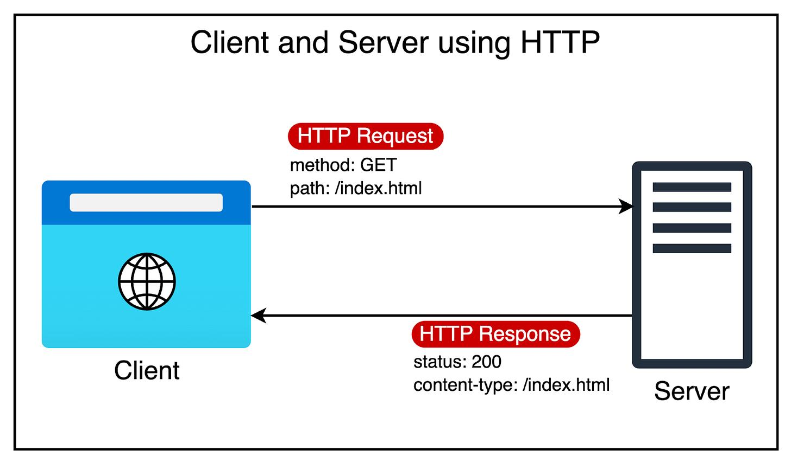
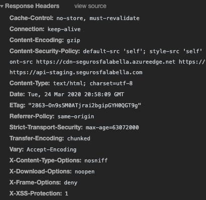

O HTTP (Hypertext Transfer Protocol) é um protocolo de comunicação utilizado na Web para a transferência de dados entre clientes e servidores. Ele define como as mensagens são formatadas e transmitidas, permitindo que os navegadores solicitem recursos e recebam respostas dos servidores.
Quando um usuário acessa um site, o navegador envia uma requisição HTTP ao servidor, solicitando o recurso desejado (como uma página HTML, imagem ou vídeo). O servidor processa a requisição e envia uma resposta HTTP de volta ao navegador, contendo o recurso solicitado ou uma mensagem de erro.

O HTTP é um protocolo sem estado, o que significa que cada requisição é independente e não mantém informações sobre requisições anteriores. Para gerenciar sessões e manter informações entre requisições, são utilizados cookies e outros mecanismos.
